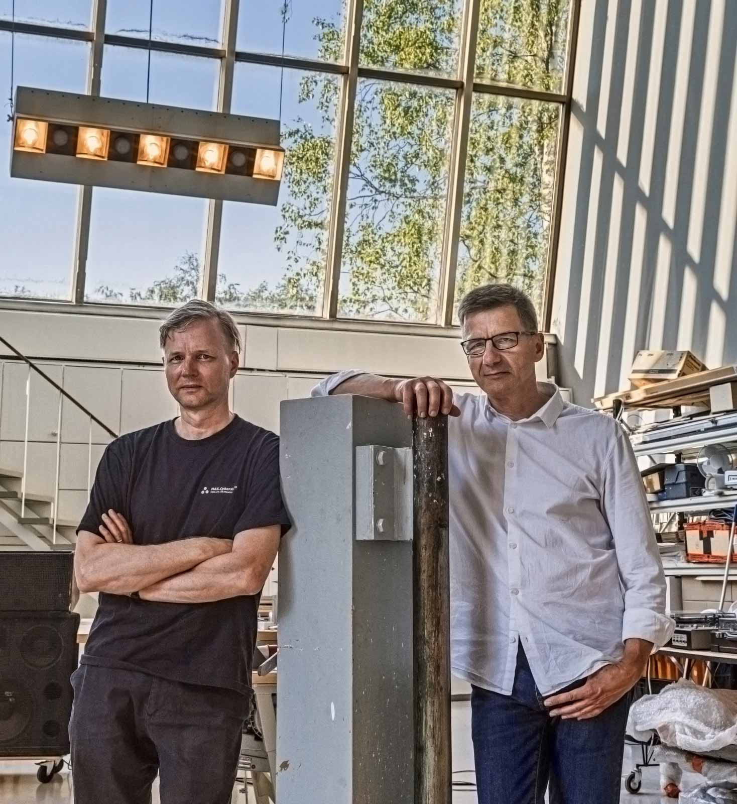

Tommi Grönlund
Born in Turku 1967, lives and works in Helsinki
Petteri Nisunen
Born in Helsinki 1962, lives and works in Helsinki
Tommi Grönlund
tommi.gronlund@g-n.fi
+358 50 5941920
Petteri Nisunen
petteri.nisunen@g-n.fi
+358 50 5887262
Grönlund-Nisunen
Merimiehenkatu 32 VA2
00150 Helsinki
Finland
anhava.com/artists/gronlund-nisunen/
estherschipper.com/artists/40-gronlund-nisunen/
tino.selic@gmail.com
tinoselic.myportfolio.com/
Born in Turku 1967, lives and works in Helsinki
Petteri Nisunen
Born in Helsinki 1962, lives and works in Helsinki
Contact
Tommi Grönlund
tommi.gronlund@g-n.fi
+358 50 5941920
Petteri Nisunen
petteri.nisunen@g-n.fi
+358 50 5887262
Grönlund-Nisunen
Merimiehenkatu 32 VA2
00150 Helsinki
Finland
Prices and Awards
2013
Leonardo da Vinci World Award of Arts, World Cultural Council2004
Edstrandska Stiftelsen2001
Kuvataiteen valtionpalkinto / Statens boldkonstpris / Finnish State Art Award Stina Krooks StiftelseLinks
vimeo.com/usergronlundnisunen/videosanhava.com/artists/gronlund-nisunen/
estherschipper.com/artists/40-gronlund-nisunen/
Website
Tino Selictino.selic@gmail.com
tinoselic.myportfolio.com/

Tommi Grönlund & Petteri Nisunen, 2020